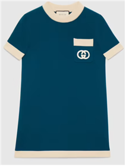
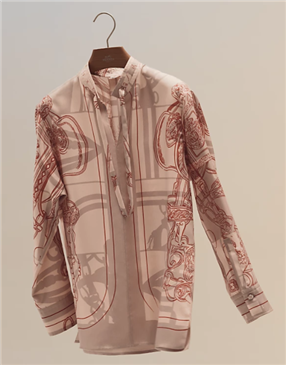
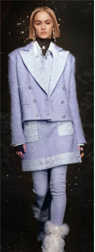
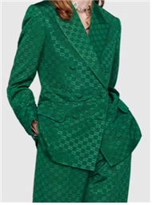
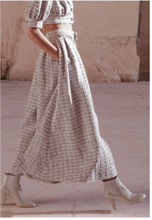

Teachable Machine Image Model[옷추천 with hair color]
*본 예측 모델은 본연의 머리색이 검은색, 갈색, 노란색, 빨간색, 회색임을 가정하여 만들었습니다.
정확하지 않을 수 있으니 재미로만 봐주세요
[A그룹-검은색머리]
검은색 머리인 당신은 명도가 낮은(어두운 색)옷이 잘어울립니다!

[B그룹-갈색머리]
갈색 머리인 당신은 가을 웜톤일 가능성이 높으므로 채도가 높지만 명도가 봄웜에 비해 낮은 따뜻한 색의 옷이 잘어울립니다!

[C그룹-노란색머리]
노란색 머리인 당신은 명도가 높은 밝은 파스텔톤의 옷이 잘어울립니다!

[D그룹-빨간색머리]
빨간색 머리인 당신은 봄 웜톤일 가능성이 높으므로 채도가 높은 밝은색 옷이 잘어울립니다!

[E그룹-회색머리]
회색 머리인 당신은 여름뮤트톤일 가능성이 높아 명도가 흰색에 가까운 옅은색의 옷이 잘어울립니다!
